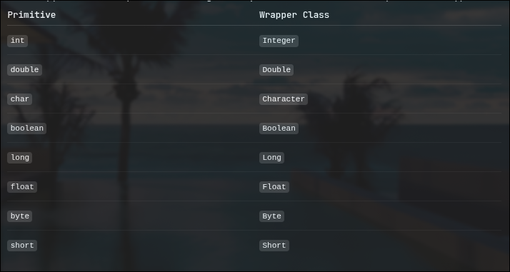

OOPS
Encapsulation
- Making few methods stay inside a object
- Making a few objects stay inside a class
Inheritance
- If there is a class that can have properties that could be a part of a superset.
Then a superset class can be created which would be its parent.And the original class can now take its properties
by inheritance using the keyword extends
Polymorphism
- If there are same classes then you can call that class specific to one class by
- Referring to that class while declaring that object.
- You can refer to the point and point to the child
vehicle v = new car()
later you can make v point to the other class like
v = new bicycle()
Abstraction
- You won't know what is actually written inside a function
- But you will have access to maybe read but definitely use it
- Only if you change one function - everyone will be able to use it , the updated version
in java declarating , instancing , and initialisatoin works differently
int maxSpeed
if you only write this much it will be initialised to 0
but
if its a non-primitive type and you are access the value using a reference [ which all non-primitive types do ]
then
say
String color
this case since String is reference to some chunk in memory and not particular piece - it will just be initilised as NULL
same goes for instancing - created a new objects
int maxSpeed = new int
String color = new String
initialisation -
int maxSpeed = new int[5] not allowed since int is just a primitve type
you could make it an array like int[] maxSpeed = new int[6]
or use the non-primitive [ interger only ] type
Integer maxSpeed = new Integer(120) now this is a wrapper class for Int
String color = new String("blue")
also if you were to do
Integer maxSpeed
this wouldn't initialise to 0 but NULL
Wrapper classes in java are object oriented classes for primitive types.
Following

If there is a parent and a child and both have constructor.
if you declare an object of the child - you need to define the super(_param_) for the constructor of the super class .
by default it happens without any params . If you super constructor reqs params you need to explicity mention super(_param_) before anything else
in the child constructor.
Class casting converting a class object to some other object -
upcasting - parent reference points to child.
downloading - child reference points to parent. [ needs to be explicit and on the instance of parent ]
check by
if( v instanceof car ){
car c = (car)v
}
don't do child c = new parent()
instead
parent p = new child()
child c = (c)parent
Every class that you create in java is a subclass of the Object class.
Exception
use throw new _exception_name_ to throw exceptions
if a method is throwing an exception use throws in the function signature to throw is to the function that called it.
To handle that exception any any point in the stack trace use
try{}catch{}
Why use this - this won't hinder the flow of the program and helps to continue the further execution.
There is a main class called as Exception
like how every object is a subclass of Object
every exception [ user defined ] or [system defined] is a subclass of Exception
The Finally keyword is used to execute a block definitely after a try{}catch{}
like closing a scanner using sc.close()